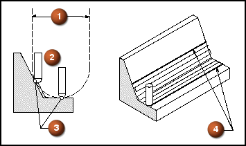

参考刀具直径值将指定粗加工(参考)刀具的直径，精加工切削区域的宽度将取决于这个值。清根参考刀具工序的精加工切削区域宽度，取决于先前用于粗加工该区域的球头铣刀或圆端铣刀的直径，该粗加工刀具即被指定为参考刀具，NX 将计算参考刀具在哪里会与部件接触(双切点)，然后使用这些点来定义精加工工序的切削区域(4)，使用的是更小的精加工刀具(2)。
由于是参考刀具，而不是真实的刀具确定双切点，这个类型的清根工序可以使用多个小刀具的刀路来精加工大圆角。

用于粗加工的参考刀具
更小的精加工刀具
双切点
定义切削区域的接触曲线